Step by step guide¶
The Driving Theory repository contains code that creates a bot that is able to complete a multiple choice driving theory test. The idea came from my own experience where every night I would complete a number of theory tests as preparation leading upto my to my own real test. I was wondering whether it would be possible to create a bot that would complete the theory test for me by identifying the question and selecting the right answers.
I wanted to go one step further than just creating a process that can identify answers to questions. I wanted to set up a system whereby I would simply set the code to run and sit back to watch the bot complete the test for me. This project therefore heavily relies on the Selenium module which can automate browsers. For more information, please see this documentation: https://www.selenium.dev/
The project contains several classes in the file driving_theory.py. Each class represents a step in the process that is required in order for the bot to function.
Classes¶
AnswerSearch: searches for the right answer
ImageDetection: searches for an image in the question
ImageAnswers: obtains the answers from image questions
CorrectAnswer: attempts to determine the correct answer
StartTest: starts the actual multiple choice test
Logging: logs all important messages
The Process Guide¶
We will now describe the general process undertaken. This is the simplest case, where the bot opens the correct webpage, identifies the question, determines that there are no pictorial questions or answers and executes the steps to answer that question.
Step 1¶
The first step to consider is to start the test and navigate our way to the page. The class StartTest contains a open_webpage function which takes in a URL and a start_xpath parameter. This is the start button of the page to be clicked on:
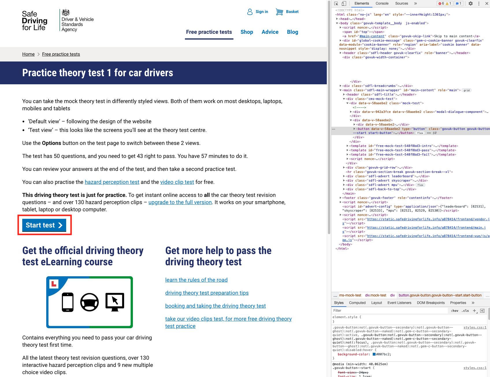We also make an image bank of highway code images (https://www.gov.uk/guidance/the-highway-code/traffic-signs) which we will make use of later once we encounter pictorial questions:
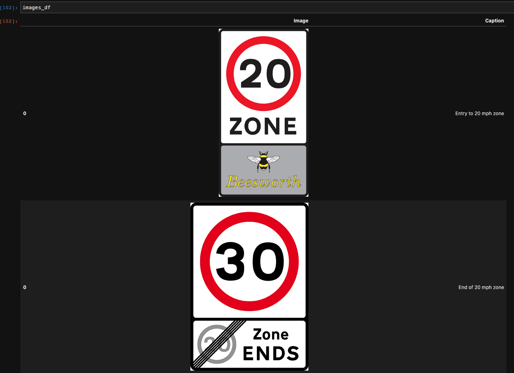Step 2¶
The second step, once the test has been started, is to identify the question:
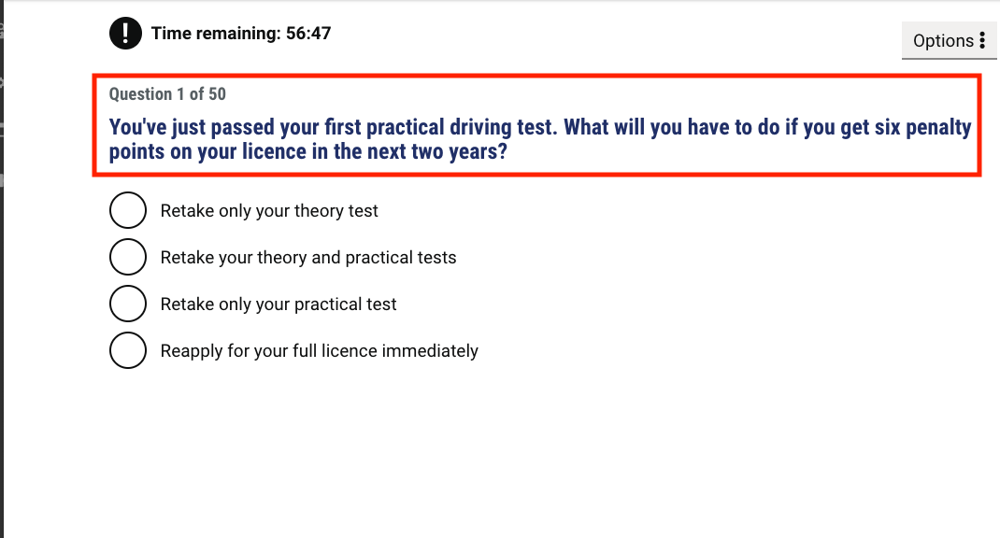Step 2¶
The bot then identifies the choices it is presented to the question and stores the answers in a dictionary along with its respective ids:
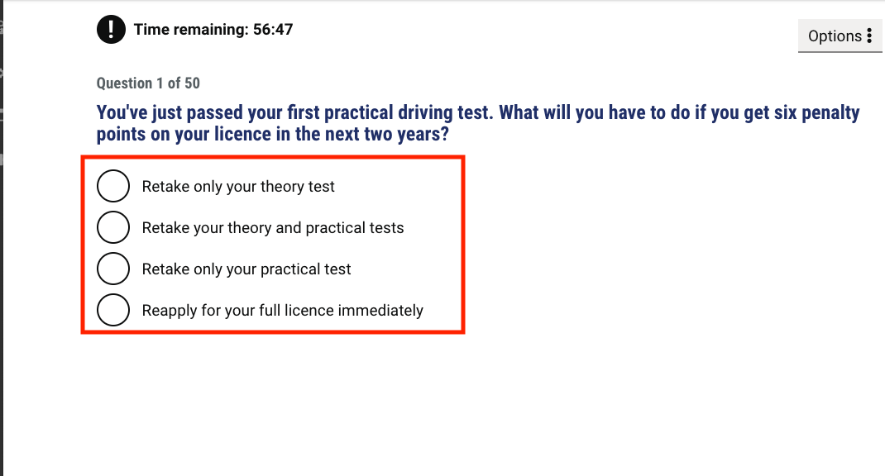 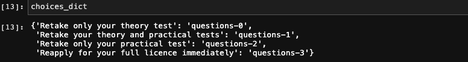Step 3¶
The bot then performs as a human would if they do not know the answer to the question; it Googles it:
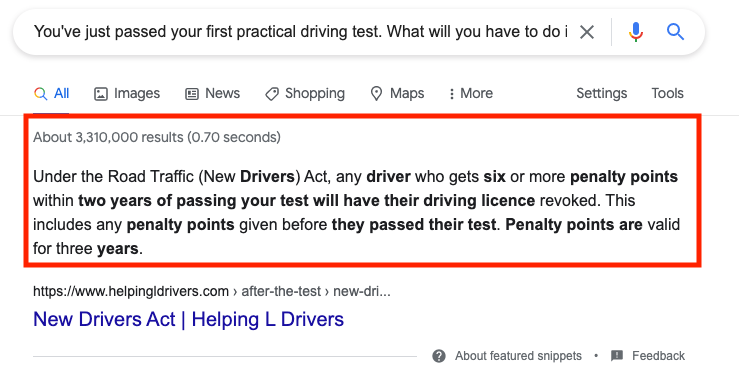 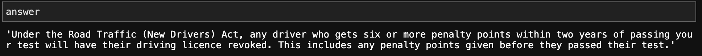It then uses the NLTK module to dissect the answer into its relevant topics:
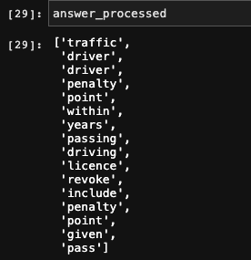For more information into this module and its amazing capabilities, please see its documentation: https://www.nltk.org/
For each answer identified, it splits into n-grams. These are a set of co-occurring words within a given window. When computing them, you typically move one word forward. N-grams are very useful in developing language models and we have made them useful here as here to determine which multiple choice is the closest matching to the answer.
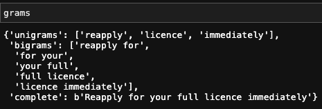Then for each answer, the bot creates a score based on how many grams appear in the processed answer:
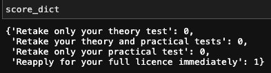We construct a dictionary of unigrams, bigrams and the full string choice. The process then looks for each subgram in the gram dictionary within the answer. The more subgrams that are found in the answer, the more points are awarded. If the full string is found in the answer, the process awards the choice the maximum number of points.
A check is then executed to evaluate if there are duplicate answers in the score dictionary, if no duplicate answers are present, an answer is obtained with the highest score:
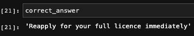Step 4¶
In every step executed by the bot, it logs the information into a text file to be consulted later. Once the bot has completed, the text file log is then available to view as a means of seeing which questions were identified, which choices were identified and how the bot proceeded to answer them:
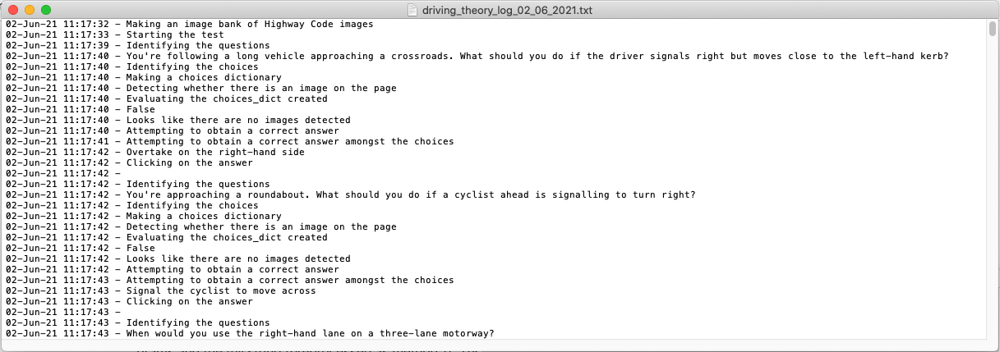Note that you do have to provide a filepath for the log file to be created.
We will now explain three unique cases which are alternate paths of execution, there are more cases that are handled than these, so please feel free to consult the code base if you are interested and want to dive deeper.
Case - Duplicate Answers¶
We will now consider the first unique case; this is when the bot executes the process outlined above as usual but encounters duplicate answers with the same scores:
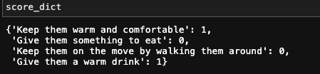The function obtain_correct_answer in the class CorrectAnswer takes this into account by using the Regex library and employing the function findall. It then uses a similar logic of the n-grams process and awards scores to each duplicate answer based on how many times they appear in the correct answer obtained from a Google search.
For more information on the Regex library, please see the relevant documentation (https://docs.python.org/3/library/re.html).
Case - Image Answers¶
We will now touch upon the case about what the bot does when it encounters answers that are images. These are quite common in the Driving Theory test as a common question would be 'Which sign means...?':
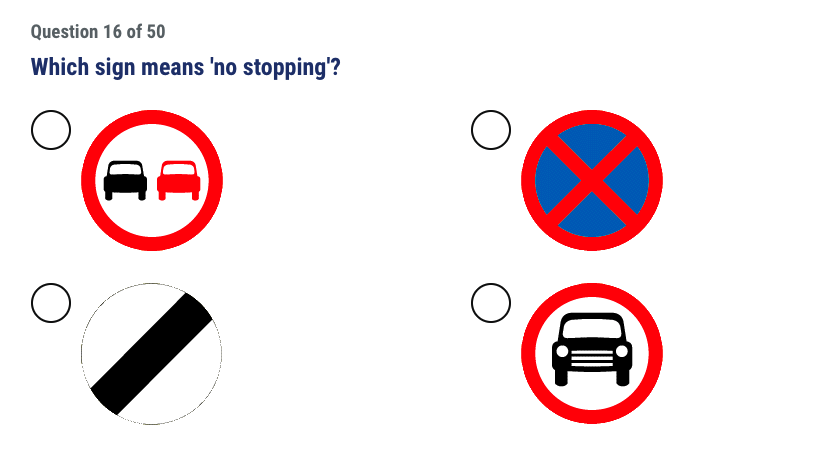As discussed above, when the bot is presented with a new page, it identifies the question and the answer choices. The method of creating a choices dictionary only works if the choices presented contain text. A process in place then evaluates whether or not this dictionary is empty; if it is then this means that the choices are images, not text:
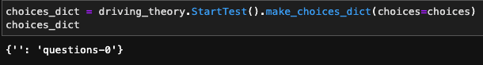An evaluation process then takes place and outputs a bool. If True, then the choices dictionary is indeed empty and an alternate process is executed:
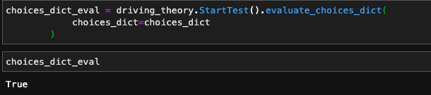This alternate process makes another dictionary with captions to each image, it uses the Highway Code Image Bank created at the beginning of the process:
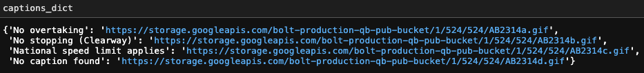In the event that it cannot find a caption to the image, a fallback caption will be returned: 'No caption found'
The process then analyses the question and returns the caption that is the closest matching answer:
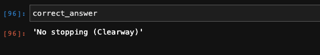It then executes the rest of the process by analysing the n-grams and matching to the original question.
Case - Image Question¶
The final case we will touch upon is also another common one; what does the bot do in the event that it encounters an image question with text answers:
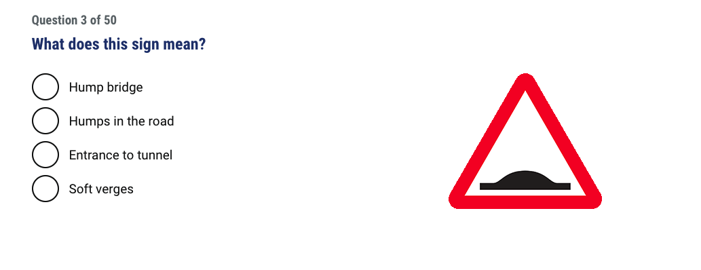In this instance, the alternate process is similar to the case of Image Answers. However in this case, the choices dictionary that will be created will not be empty as the answer choices themselves are texts, not images:
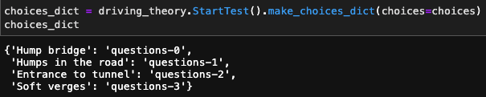The process then looks through the Highway Code Image Bank to see if it can obtain a caption, in the event that it cannot, it will obtain a new tab on Google and perform an image search instead:
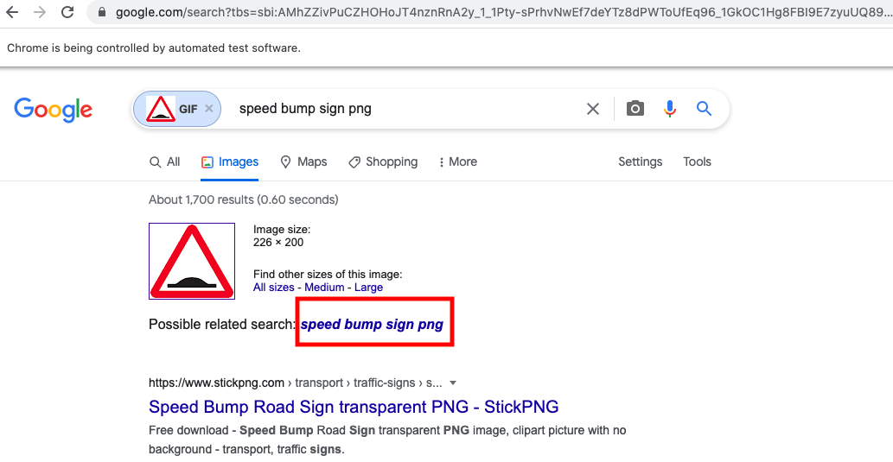 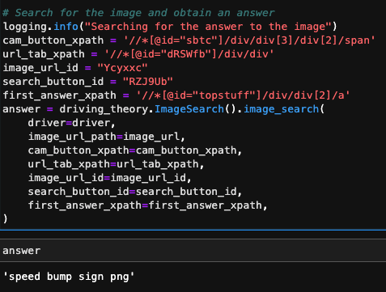Once an answer has been obtained, the rest of the process is then executed to obtain a correct answer.